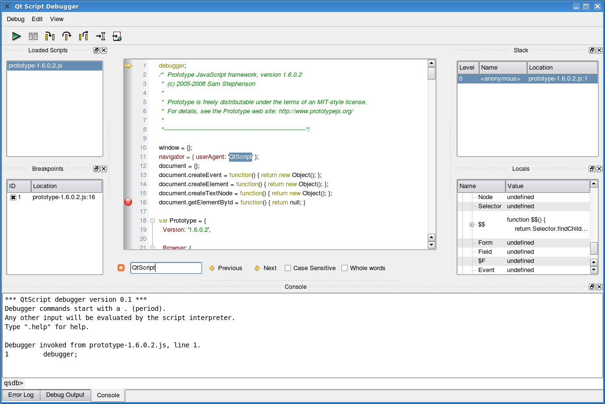

Qt Script Debugger Manual
The Qt Script Tools module provides a debugger for script execution in Qt applications that use Qt Script. Application developers can embed the debugger into their application through the QScriptEngineDebugger class. This manual describes how to use the debugger. We assume that the reader is somewhat familiar with general debugging concepts and existing debugging tools.
We assume that the debugger has been integrated into the application through the QScriptEngineDebugger::standardWindow() function, which provides the standard debugger configuration.
Getting Started
The following image shows the debugger as created with standardWindow():

The debugger will start, i.e., take control over the script's execution when any of these conditions are met:
- The
debuggerstatement is encountered in the script. - Clicking the Interrupt menu item from the Debug menu in the main window.
- A breakpoint is reached.
- An uncaught script exception is thrown.
Once the debugger is started, the execution state can be inspected, e.g., the value of variables can be queried and the current program stack shown. New breakpoints can be set.
The debugger will resume, i.e., give the control back to the script engine, when the user clicks Continue menu item from the Debug menu. It will be invoked again if one of the conditions described in the list above is met.
Overview of Debugger Components
The debugger's functionality is divided into a series of components, each being a widget that can be shown in the main window of the debugger. The following table describes each component and how they relate to each other.
| Component | Description |
|---|---|
| Console Widget | The console widget provides a command-line interface to the debugger's functionality, and also serves as an interactive script interpreter. The set of commands and their syntax is inspired by GDB, the GNU Debugger. Commands and script variables are auto-completed through the TAB key. Any console command that causes a change in the debugger or debugger target's state will immediately be reflected in the other debugger components (e.g. breakpoints or local variables changed). The console provides a simple and powerful way of manipulating the script environment. For example, typing "x" and hitting enter will evaluate "x" in the current stack frame and display the result. Typing "x = 123" will assign the value 123 to the variable |
| Stack Widget | The stack widget shows a backtrace of the script execution state. Each row represents one frame in the stack. A row contains the frame index (0 being the inner-most frame), the name of the script function, and the location (file name and line number). To select a particular stack frame to inspect, click on its row. |
| Locals Widget | The locals widget shows the variables that are local to the currently selected stack frame; that is, the properties of the objects in the scope chain and the this-object. Objects can be expanded, so that their properties can be examined, recursively. Properties whose value has changed are shown in bold font.Properties that are not read-only can be edited. Double-click on the value and type in the new value; the value can be an arbitrary expression. The expression will be evaluated in the associated stack frame. While typing, you can press the TAB key to get possible completions for the expression. |
| Code Widget | The code widget shows the code of the currently selected script. The widget displays an arrow in the left margin, marking the code line that is being executed. Clicking in the margin of a line will cause a breakpoint to be toggled at that line. A breakpoint has to be set on a line that contains an actual statement in order to be useful.When an uncaught script exception occurs, the offending line will be shown with a red background. The code widget is read-only; it cannot currently be used to edit and (re)evaluate scripts. This is however possible from the command-line interface, see Console Command Reference. |
| Scripts Widget | The scripts widget shows the scripts that are currently loaded in the script engine. Clicking on a script will cause its code to be shown in the code widget. When a script is no longer referenced by the debugger target it is removed from the scripts widget. Code evaluated through QScriptEngine::evaluate() without a name specified, will be displayed in the widget as Anonymous. |
| Breakpoints Widget | The breakpoints widget shows all the breakpoints that are set. A breakpoint can be disabled or enabled by clicking the checkbox next to the breakpoint's ID (the ID is provided so that the breakpoint can be manipulated through the console widget as well). A condition can be associated with the breakpoint; the condition can be an arbitrary expression that should evaluate to true or false. The breakpoint will only be triggered when its location is reached and the condition evaluates to true. Similarly, if the breakpoint's ignore-count is set to N, the breakpoint will be ignored the next N times it is hit. A new breakpoint can be set by clicking the New Breakpoint button and typing in a location of the form <filename>:<linenumber>. The breakpoint location can refer to an already loaded script, or one that has not been loaded yet. |
| Debug Output Widget | The debug output widget shows messages generated by the print() script function. Scripts can use the special variables __FILE__ and __LINE__ to include the current location information in the messages. |
| Error Log Widget | The error log widget shows error messages that have been generated. All uncaught exceptions that occur in the engine will appear here. |
Resuming Script Evaluation
Script evaluation can be resumed in one of the following ways:
- Continue: Evaluation will resume normally.
- Step Into: Evaluation will resume until the next statement is reached.
- Step Over: Evaluation will resume until the next statement is reached; but if the current statement is a function call, the debugger will treat it as a single statement.
- Step Out: Evaluation will resume until the current function exits and the next statement is reached.
- Run to Cursor: Run until the statement at the cursor is reached.
- Run to New Script: Run until the first statement of a new script is reached.
In any case, script evaluation can also be stopped due to either of the following reasons:
- A
debuggerstatement is encountered. - A breakpoint is hit.
- An uncaught script exception occurs.
Resuming After an Uncaught Exception
When an uncaught script exception occurs, it is not possible to continue evaluating the current function normally. However, you can use the console command return to catch the exception and return a value to the calling function.
Console Command Reference
Note that you can also get help on the available commands by typing ".help" in the console.
Breakpoint-related Commands
Break points is set
break <location>
Sets a breakpoint at a given code line.
.break foo.qs:123
This command sets a breakpoint at foo.qs, line 123.
.break 123
This command sets a breakpoint at line 123 in the current script; the current script is the script associated with the current stack frame.
Each breakpoint has a unique identifier (an integer) associated with it. This identifier is needed by other breakpoint-related commands.
clear <location>
.clear foo.qs:123
clears (deletes) the breakpoint at foo.qs, line 123.
clear 123
clears (deletes) the breakpoint at line 123 in the current script; the current script is the script associated with the current stack frame.
condition <breakpoint-id> <expression>
Sets a condition for a breakpoint.
.condition 1 i > 42
specifies that breakpoint 1 should only be triggered if the variable i is greater than 42.
The expression can be an arbitrary one, i.e. it can have side-effects. It can be any valid QScript conditional expression.
delete <breakpoint-id>
Deletes a breakpoint, i.e., removes it from the current debugging session.
disable <breakpoint-id>
Disables a breakpoint. The breakpoint will continue to exist, but will not stop program execution.
enable <breakpoint-id>
Enables a breakpoint. Breakpoints are enabled by default, so you only need to use this command if you have disabled to breakpoint previously.
ignore <breakpoint-id> <count>
Sets the ignore-count of a breakpoint, i.e., the breakpoint will not stop the program execution unless it have been reached count times. This can, for instance, be useful in loops to stop at a specific iteration.
.ignore 1 5
Specifies that breakpoint 1 should be ignored the next 5 times it is hit.
info breakpoints
Lists the breakpoints that are set.
.info breakpoints
tbreak <location>
Sets a temporary breakpoint. This command is identical to the break command, only the breakpoint will be automatically deleted the first time it is hit.
File-related Commands
list <location>
Lists the contents of a script around a given location, where the location is given as a line number and, optionally, the name of the file from which you will print. If only a line number is given, .list will use the file of the current stack frame.
.list foo.qs:125
When no arguments are given, list will incrementally list sections of the current script.
info scripts
Lists the scripts that are currently loaded.
Execution-related Commands
advance <location>
Advances execution to a given location. The syntax of the location is the same as for setting breakpoints. For example:
.advance foo.qs:125
continue
Continues execution normally, i.e, gives the execution control over the script back to the QScriptEngine.
eval <program>
Evaluates a program.
finish
Continues execution until the current function exits and the next statement is reached (i.e., the statement after the call to the function).
interrupt
Requests that execution should be interrupted. Interruption will occur as soon as a new script statement is reached.
next <count = 1>
Continues execution until a new statement is reached; but if the current statement is a function call, the function call will be treated as a single statement. This will be done count times before execution is stopped; the default is one.
return <expression>
Makes the current frame return to its caller. If expression is given, it will sent as the result of the function (i.e., replacing the functions return value). expression can be any valid QScript expression.
step <count = 1>
Continues execution until a new statement is reached. If the number count is given as argument, this will be done count times before execution is stopped. As opposed to next <count = 1>, step will enter functions when encountering a function call statement.
Stack-related Commands
backtrace
Shows a backtrace of the current execution. The trace will list the function name and its position in the script for each stack frame.
down
Selects the previous (inner) stack frame. The execution will not return to this frame, but you will get access to its local variables.
frame <index>
This command moves to the stack frame with the given index. The index of the frame on the top of the stack is 0. Previous frames are numbered from 1 and upwards (the bottom frame in the stack has the largest index).
info locals
Lists the variables that are in the scope of the current frame.
up
Selects the next (outer) stack frame.